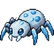

Tap a stage to read its story.
Glacidling is a tiny, round ice-blue spider with a plump body covered in pale blue spots, six thin legs, and enormous wide eyes that make it look permanently astonished. It hangs from a single silk thread in the Bug Thicket undergrowth, swaying in any breeze. When it spots something interesting it drops, spins a tiny web, then immediately forgets what it was spinning it for and wanders away. The thicket is full of its tiny abandoned webs, each perfectly symmetrical, each leading to nothing.
Field note: Glacidling's abandoned webs are perfectly geometric every time - somehow always a hexagon with exactly twelve radial threads.
Bug Thicket. Glacidling and its family are found in the Bug Thicket. See everyone who lives there.
Share a Bond Food that matches its types to become friends. Glacidling loves:
A Bond Food is not a trick. It joins your spirit with the Kimuro's spirit, and only when it chooses you.
Print the Kimuro adventure packs: mazes, cards, a board game and Bond Mark medals.
See the printable packs